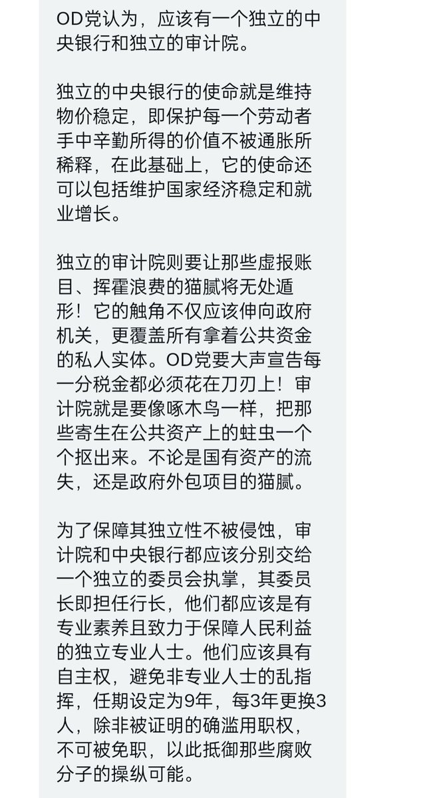

𝐀𝐬𝐡𝐥𝐞𝐲 𝐁𝐥𝐨𝐜𝐤🍥🌹🇹🇼🏳️⚧️🇪🇺
@bolckAshley
「如果我們大家能整合一條心，向盟友指出的獨立央行和審計院的自由資本主義道路來走，我們一定能夠興復革命，我們一定能夠保衛民社！」
「聯合社會革命黨可以是一個自由資本主義的政黨，也可以是一個民主社會主義的政黨。」
#联合嬉皮士芝加哥男孩党 😹😹😹

联合社会革命党bot
@CSR_2025
#中推模拟选举
#联合社会革命党
经与OD党的充分协商，我们理解并接受OD党在包括其药物议题、公共安全议题、税收议题、外交议题、LGBT议题、移民议题、联邦制、国企政策、教育政策、医疗政策等方面的理念，具体可参考OD党纲，接下来预计我们将在新议会召开之际进行合作。